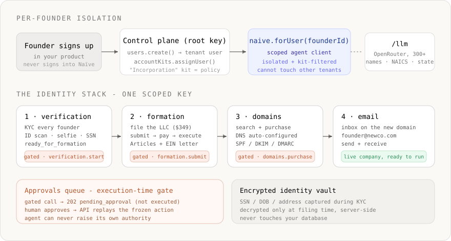
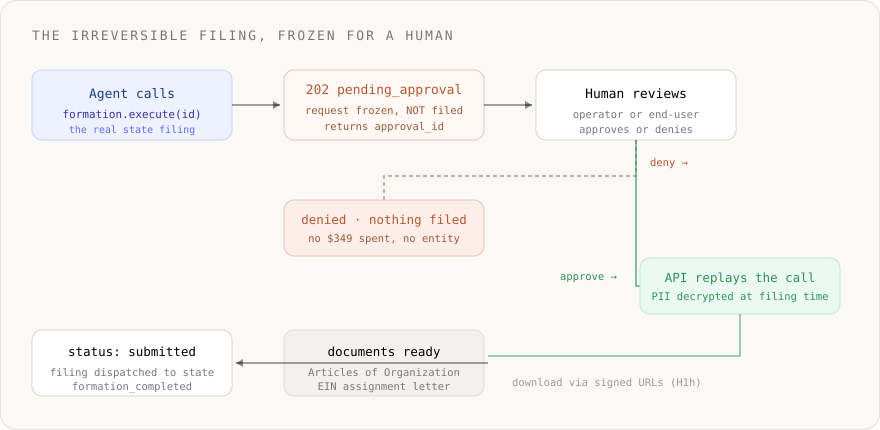

- ›An agentic incorporation product requires real identity primitives: an AI cannot substitute for verified human identity or a state filing without KYC, formation, and a human gate on every binding step
- ›
Naïve ships the whole identity stack as primitives— KYC (verification), US company formation, domain purchasing, and identity-aware email — each scoped per tenant user and governed by an Account Kit - ›Every founder is an isolated tenant user; the agent is scoped with naive.forUser(founderId) and filtered by that user's kit, so one founder's KYC, entity, and documents can never leak to another
- ›
The agent designs the entity with naive.llm.chat()— a full OpenRouter wrapper over 300+ models (anthropic/claude-sonnet-4.6, openai/gpt-5.2) — to generate name options, pick a state, map a NAICS code, and draft the business description - ›verification.start, formation.submit, the irreversible filing, and domains.purchase are gated by default: the API returns 202 pending_approval and replays the action only after a human approves
- ›
Sensitive PII (SSN, DOB, address) is captured during KYC into an encrypted identity vault and decrypted only at filing time, server-side— it never touches your database
Most "AI incorporates your startup" demos stop at a chatbot that emails you a PDF checklist. The moment you try to actually file a company for someone, the model isn't the hard part — identity, accounts, and authority are:
- You can't file a US entity without verified human identity — real KYC on every founder, with SSN, DOB, and addresses you are now legally responsible for protecting.
- One founder's identity data and formation documents must never leak into another customer's account.
- Filing an entity, spending the formation fee, and buying a domain are binding, irreversible actions — they need a human in the loop, enforced when the action runs, not as a UI afterthought.
Without a platform, you end up integrating a KYC vendor, encrypting and isolating PII, integrating a filing provider, a domain registrar, an email provider, and building a bespoke approval workflow before you write a single line of product. That plumbing is the product — and it's exactly what Naïve ships as primitives.
This is a developer tutorial. Every code block runs against the current @usenaive-sdk/server, with signatures pulled straight from the docs. By the end you'll have a multi-tenant backend where each founder gets an isolated, governed AI agent that designs a company, runs KYC, files an LLC through Naïve's formation flow, buys a domain, and turns on email — with binding steps frozen for a human by default.
Not legal advice. This tutorial shows how to wire formation and KYC tooling on Naïve. It is not legal or tax advice, and you remain responsible for licensing, disclosures, and compliance in your jurisdiction.

What we're building
- A backend service that provisions an isolated AI agent per founder (the customer of your product).
- The agent designs the entity — name options, home state, NAICS industry code, and a compliant business description — using an OpenRouter model through
naive.llm. - The agent runs KYC on every founder, files a real US LLC, buys a domain, and provisions an inbox on it.
- Every legally binding step — start KYC, file the entity, purchase the domain — returns
202 pending_approvaland only runs after a human approves.
The whole arc is the Users, Account Kits, Verification, Formation, Domains, Email, and LLM primitives, composed behind one key.
Step 0: Install and authenticate
You need one Naïve workspace key (nv_sk_...) from the developer dashboard. It is a server secret — the SDK is server-only.
npm install @usenaive-sdk/serverimport { Naive, isPendingApproval } from "@usenaive-sdk/server";
const naive = new Naive({ apiKey: process.env.NAIVE_API_KEY! });That single client is your control plane (company-scoped: naive.users, naive.accountKits) and, via naive.forUser(id), your data plane scoped to any one founder. There are no per-provider keys anywhere in this tutorial — KYC, filing, the registrar, email, and the models all ride on this one key.
Step 1: Define the policy once with an Account Kit
An Account Kit is a reusable policy template. It declares which primitives a user may use and which of those actions must pause for human approval. Define the incorporation policy once, then assign every founder to it.
const kit = await naive.accountKits.create({
name: "Incorporation",
primitives_config: {
verification: { enabled: true, requiresApproval: true },
formation: { enabled: true, requiresApproval: true },
domains: { enabled: true, requiresApproval: true },
email: { enabled: true },
},
});- The four primitives an incorporation agent needs are enabled; everything else stays off.
requiresApproval: trueonverification,formation, anddomainsis the execution-time gate. In fact, cards, domains, verification, formation, and connecting services default to requiring approval for agent calls — setting it explicitly just makes the policy self-documenting.- Change the kit later and the policy changes for every founder on it at once.
Step 2: Provision a founder as a tenant user
A tenant user is one of your end-users. Every primitive — verification, formation, domains, email — is scoped to one. Tenant users never sign into Naïve; you manage them entirely through the SDK.
const founder = await naive.users.create({
external_id: "founder_db_uuid", // your own stable id
email: "ada@foundermail.com",
label: "Ada Lovelace",
account_kit_id: kit.id, // governed by the Incorporation kit
});
// Scope the founder's identity work to this client. Every gated call below uses it.
const client = naive.forUser(founder.id);clientis the same surface asnaive, permanently bound to this founder.- Founder A's
clientcan only see and act on Founder A's resources, and every call is additionally filtered by the Incorporation kit. There is no way for it to reach Founder B's KYC, entity, or documents.
Step 3: Let the agent design the company with an OpenRouter model
Before anything binding happens, the agent does the cheap, reversible thinking: pick a few legal name options, choose a home state, map the business to a NAICS industry code, and write a compliant (≤256 char) description.

The LLM primitive is a full wrapper over OpenRouter: 300+ models behind one OpenAI-compatible endpoint, with an optional models[] fallback chain and a provider{} routing object. The request/response shapes are exactly OpenRouter's; Naïve holds the OpenRouter key and bills the exact returned cost in credits.
Model reasoning here isn't founder-private PII, so run it on your workspace default user with naive.llm (scope it per founder with client.llm if you'd rather meter the spend that way):
const brief = "A studio building AI agents for small law firms. Founder: Ada Lovelace, 100% owner.";
const res = await naive.llm.chat({
model: "anthropic/claude-sonnet-4.6",
models: ["anthropic/claude-sonnet-4.6", "openai/gpt-5.2"], // fallback chain
provider: { sort: "throughput" }, // OpenRouter routing
messages: [
{
role: "system",
content:
"You are a US company-formation assistant. Reply with ONLY compact JSON: " +
'{"name_options":[{"name":string,"entity_type_ending":"LLC"}],' +
'"state":"WY"|"DE","naics_hint":string,"description":string}. ' +
"description must be <=256 chars. Provide exactly 3 name_options.",
},
{ role: "user", content: brief },
],
});
const plan = JSON.parse(res.choices[0].message.content);
console.log(plan.name_options, plan.state, plan.naics_hint, plan.description);
console.log("LLM cost (credits):", res.credits_used);- Real model slugs, a real fallback chain, and real provider routing — straight from the LLM docs. Swap models by changing one slug.
res.credits_usedis the exact OpenRouter cost, converted to credits, so you can attribute spend per founder.
Now resolve the NAICS hint to a real code id. The catalog read is free:
// GET /v1/formation/naics-codes — or: naive formation naics-codes
const naics = await fetch("https://api.usenaive.ai/v1/formation/naics-codes", {
headers: { Authorization: `Bearer ${process.env.NAIVE_API_KEY}` },
}).then((r) => r.json());
// Match plan.naics_hint against naics.naics_codes[].title and take its id, e.g.:
const naicsCodeId = "2o8v0kcaCWyPyi3LJFsCiTCFSyk";Nothing here is binding yet — no money has moved and no identity has been touched. That changes in the next step, which is exactly why the next step is gated.
Step 4: KYC every founder — the first execution-time gate
Filing requires verified founders. The verification primitive runs KYC and exposes a single ready_for_formation signal once everyone passes. Because verification.start is gated by the Incorporation kit, the agent's call does not execute — it freezes for a human.

const start = await client.verification.start({
members: [
{
first_name: "Ada",
last_name: "Lovelace",
email: "ada@foundermail.com",
ownership_percentage: 100,
role: "primary",
is_responsible_party: true,
},
],
});
if (isPendingApproval(start)) {
// 202 — the API froze the action instead of running it.
console.log("KYC start awaiting approval:", start.approval_id);
// A human (operator or the end-user in your app) approves...
await client.approvals.approve(start.approval_id);
// ...and the API replays the frozen verification.start.
const approved = await client.approvals.get(start.approval_id);
// approved.result holds the verification, incl. the primary member's hosted KYC link.
}isPendingApproval(res)is a typed discriminator exported from the SDK — HTTP202is a success, not a thrown error.- The gated methods (
verification.start,formation.submit,domains.purchase,cards.*,connections.connect) each resolve to either their normal result or aPendingApproval. - On approval, the API replays the original action and records the result — the agent never gets to widen its own authority.
The primary founder gets a hosted KYC link in the response; any secondary founders are emailed theirs automatically. Each completes KYC in-browser (ID scan, selfie, SSN, address). Poll until everyone passes:
// GET /v1/verification/:id — or: naive verification status <id>
const v = await fetch(`https://api.usenaive.ai/v1/verification/${verificationId}`, {
headers: { Authorization: `Bearer ${process.env.NAIVE_API_KEY}` },
}).then((r) => r.json());
if (v.ready_for_formation === true) {
// every member has status: "pass" — cleared to file
}The SSN, DOB, and addresses collected here go into Naïve's encrypted identity vault — not your database. You hold a verification_id, nothing more.
Step 5: File a real LLC — the irreversible action, gated
The formation primitive incorporates the LLC end-to-end. It's a deliberate two-step flow so payment and the irreversible filing are distinct:
formation.submit(...)validates KYC and creates a $349 hosted checkout (actionformation.create).- After payment,
naive formation execute <id>dispatches the actual state filing (actionformation.submit) — pulling verified PII from the encrypted identity vault at this moment, so it never persists in your systems.
Both steps are gated by the kit. Here's step 1:
const filing = await client.formation.submit({
verification_id: verificationId,
entity_type: "LLC",
state: plan.state, // "WY" or "DE"
naics_code_id: naicsCodeId,
description: plan.description, // <=256 chars, from the model
name_options: plan.name_options, // 3 options, for availability
});
if (isPendingApproval(filing)) {
await client.approvals.approve(filing.approval_id);
const approved = await client.approvals.get(filing.approval_id);
// approved.result.checkout_url — the $349 formation fee
}The founder pays the checkout_url. A payment webhook flips payment_status to paid. Only then does the irreversible filing run — and it is gated too:
// POST /v1/formation/:id/submit (action_type: formation.submit, the irreversible filing)
// SDK/CLI: naive formation execute <formation-id>
// Returns 202 pending_approval; approve it, and the API replays the filing.
await client.approvals.approve(filingExecApprovalId);
This is execution-time permission enforcement in its most literal form: the most expensive, least reversible action your product can take — registering a legal entity with a state — is gated by default and does not run until a human approves. A human approves, the API replays, and only then does PII leave the vault.
Track status and pull documents once filing completes:
// GET /v1/formation/:id → status: submitted → formation_completed
// GET /v1/formation/:id/documents → ArticlesOfOrganization, EinLetter (signed URLs, ~1h)Step 6: Buy the domain and turn on email
A company needs an address. Domains can search, price, and purchase a domain directly — and purchased domains are auto-configured for email (SPF/DKIM/DMARC handled). domains.purchase is gated, so it runs the same approve-and-replay loop.
// Check availability + price (free): GET /v1/domains/search?domain=...
const avail = await fetch(
"https://api.usenaive.ai/v1/domains/search?domain=adastudio.com",
{ headers: { Authorization: `Bearer ${process.env.NAIVE_API_KEY}` } },
).then((r) => r.json());
// { available: true, price: 14.99, ... }
if (avail.available) {
const buy = await client.domains.purchase("adastudio.com");
if (isPendingApproval(buy)) {
await client.approvals.approve(buy.approval_id);
const approved = await client.approvals.get(buy.approval_id);
// approved.result.checkout_url — open to complete the registration payment
}
}Once the domain shows status: "active" in client.domains.list(), provision the inbox and send the founder their first email from their own company address:
const domains = await client.domains.list();
const domainId = domains.domains.find((d) => d.domain === "adastudio.com")?.id;
const inbox = await client.email.createInbox({ local_part: "ada", domain_id: domainId });
await client.email.send({
from_inbox: inbox.address, // ada@adastudio.com
to: "ada@foundermail.com",
subject: "Your company is live",
body: "Ada Studio LLC is filed. Articles + EIN attached in your dashboard.",
});The founder now has a verified identity on record, a filed LLC, an EIN, a registered domain, and a working inbox on it — all provisioned by an agent, all gated where it counts.
The whole arc, one function
async function incorporate(founderId: string, brief: string) {
const client = naive.forUser(founderId);
// 1. Design (reversible, cheap) — OpenRouter model
const plan = await designEntity(client, brief);
// 2. KYC every founder (gated)
const verificationId = await runKyc(client, plan.members);
// 3. File the LLC: submit → pay → execute (both steps gated)
const formationId = await fileEntity(client, verificationId, plan);
// 4. Domain + inbox (purchase gated)
await provisionDomainAndEmail(client, plan.domain);
return { verificationId, formationId };
}Every helper is the SDK calls above. The gates aren't your code — they're the API returning 202 and waiting for a human. Your product can't accidentally skip them.
Execution-time permission enforcement, explicitly
This is the part that can't be bolted on later. For an agent acting on a real tenant user, these actions return 202 pending_approval and execute only on human approval:
| Action | action_type | Why it must be gated |
|---|---|---|
| Start KYC | verification.start | Pulls a real person into an identity check |
| Create formation + checkout | formation.create | Commits to a $349 charge |
| File the entity | formation.submit | Irreversible state filing; decrypts PII |
| Purchase a domain | domains.purchase | Spends money, registers an asset |
- The agent cannot raise its own ceiling — only the Account Kit (changed by you, not the agent) decides what's gated.
- Human callers (your dashboard/session) and agent calls on your own default user are not subject to agent approval gating; only agent calls on real tenant users are frozen.
- Approve, deny with a reason, or
client.approvals.wait(id)to block until resolved — the full queue is a first-class resource alongsidevaultandlogs.
What this costs
| Item | Cost | Notes |
|---|---|---|
| KYC verification | Free | Per the verification primitive |
| LLC formation | $349 | Hosted checkout; covers filing, registered agent, EIN, documents |
| Domain | market price (often ~$14.99) | Hosted checkout via the registrar |
| LLM (entity design) | exact OpenRouter cost, in credits | Billed at $0.05 = 1 credit |
| Email send | 0.016 credits | $0.0008 |
| Approvals, vault, status reads | Free | New accounts start with 20 free credits — spendable on everything here except LLM routing, which needs a paid account |
LLM, email, and other primitives bill in credits ($0.05 each); formation and domains are paid via their own hosted checkouts.
What Naïve handles for you
| Concern | How it works |
|---|---|
| Per-founder isolation | One tenant user per founder; naive.forUser(id) scopes every call; kits filter it |
| Policy as data | An Account Kit declares enabled primitives + which actions need approval |
| KYC | Hosted identity verification, a single ready_for_formation signal, statuses tracked |
| PII protection | SSN/DOB/address held in an encrypted identity vault, decrypted only at filing time |
| Incorporation | Real US LLC filing: NAICS codes, $349 checkout, EIN, Articles of Organization |
| Domains | Search, price, purchase, auto-configured DNS + SPF/DKIM/DMARC |
| Identity-aware inboxes on the new domain — send and receive | |
| Models | 300+ via OpenRouter behind one key, exact-cost billing, fallback + routing |
| Execution-time permissions | 202 pending_approval → human approves → API replays the frozen action |
You write the product. Naïve owns identity → accounts → permissions.
Get started
- Grab a key at dashboard.usenaive.ai and
npm install @usenaive-sdk/server. - Define the kit — enable
verification,formation,domains,email; keep the binding actions gated. - Provision a founder with
naive.users.create()and scope withnaive.forUser(id). - Design, KYC, file, register, send — and approve the gated steps as a human.
- Verification (KYC): usenaive.ai/docs/getting-started/verification
- Formation: usenaive.ai/docs/getting-started/formation
- Domains: usenaive.ai/docs/getting-started/domains
- Account Kits & Approvals: account-kits · approvals
- LLM (OpenRouter): usenaive.ai/docs/getting-started/llm
- Full documentation: usenaive.ai/docs
Why can't I just build an incorporation product with a KYC vendor and a filing API directly?+
How does Naïve isolate one founder from another?+
Which actions require approval, and can I change that?+
Where does sensitive PII like SSN and DOB live?+
Which models can the agent use to design the company, and how is it billed?+
What does it cost to form a company through Naïve?+
Do my founders ever sign into Naïve?+
Building the autonomous company infrastructure.
Building multi-tenant AI agents into your SaaS means giving each customer an isolated, governed agent. Here's the full architecture and how to ship it.
Secrets management for AI agents means letting an agent use a credential without exposing it to the model. Here's the per-tenant vaulting pattern that fixes it.
Verify the identity of an Employee — the principal behind every autonomous business — with hosted KYC, per published verification docs, and PII handled outside plaintext on Naïve servers.
Form a US LLC from your AI agent via KYC, hosted checkout, and end-to-end LLC filing. Registered agent, state filing, and EIN application are included in the published formation fee; the Company becomes the substrate for cards, domains, and email.